Scheda · 01In evidenza
Human Tecar
Due tipi di elettrodi: uno lavora sui tessuti molli, l'altro arriva fino all'osso. Radiofrequenza per contratture, edemi, versamenti.

- Invasiva?
- No
- Dolorosa?
- No
Torna a muoverti.
Hai male da settimane. Hai provato ad aspettare... Siamo tre fisioterapisti in Corso Borsalino 19, Alessandria. Vieni, ti visitiamo, ti diciamo cosa non va e cosa faremo per risolverlo.
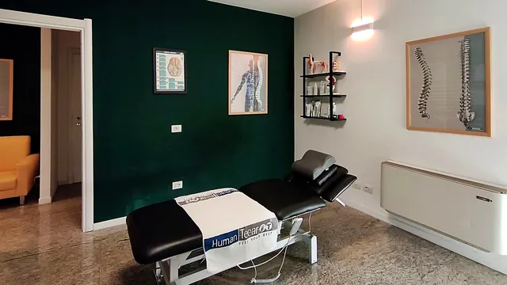
Per schiena, collo e articolazioni bloccate non basta un semplice massaggio, serve una terapia manuale dedicata.
Per schiena, collo e articolazioni bloccate non basta un semplice massaggio, serve una terapia manuale dedicata.
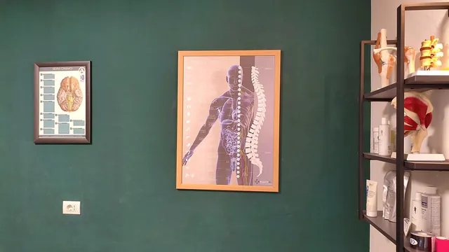
Tecniche manuali, niente di invasivo. Efficace contro lombalgie, cervicalgie, cefalee.
Tecniche manuali, niente di invasivo. Efficace contro lombalgie, cervicalgie, cefalee.
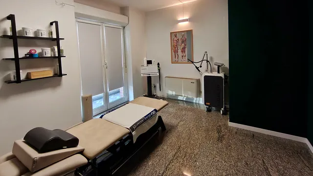
Allenamento e lavoro intenso lasciano il corpo teso, questa pratica agisce sulla tensione prima che diventi infortunio.
Allenamento e lavoro intenso lasciano il corpo teso, questa pratica agisce sulla tensione prima che diventi infortunio.

Fisioterapia in funzione della prevenzione infortuni e il mantenimento delle funzioni motorie.
Fisioterapia in funzione della prevenzione infortuni e il mantenimento delle funzioni motorie.
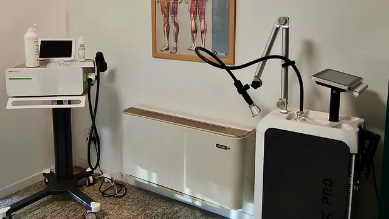
Terapia manuale, esercizio e neuromodulazione MONOS: molto efficaci contro dolori cronici.
Terapia manuale, esercizio e neuromodulazione MONOS: molto efficaci contro dolori cronici.
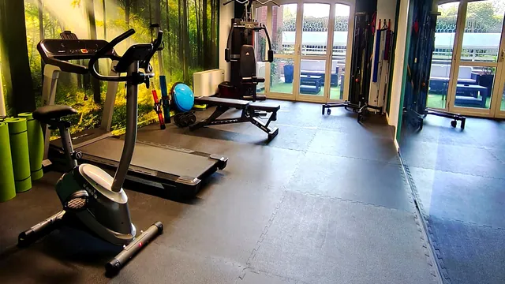
Metodo Mézières e rieducazione posturale. Per scoliosi e atteggiamenti posturali scorretti.
Metodo Mézières e rieducazione posturale. Per scoliosi e atteggiamenti posturali scorretti.
Due tipi di elettrodi: uno lavora sui tessuti molli, l'altro arriva fino all'osso. Radiofrequenza per contratture, edemi, versamenti.
Centro specializzato Storz Medical. Onde d'urto focali utilizzate in ambito ortopedico, urologico ed estetico. Per problemi persistenti.

Laser ad alta potenza. Laser che arriva dove la pomata non arriva. Infiammazioni, traumi, articolazioni.

Elettrodi con stimoli a frequenze variabili per calmare i nervi. Per lombalgie, sciatica, ernia, tunnel carpale. Centro autorizzato MONOS.

Pedana e sensori altamente tecnologici. Vedi a schermo come stai svolgendo un movimento.

Correnti a bassa frequenza per ridurre il dolore e rilassare il muscolo. Spesso nelle prime sedute.

Palestra con stazione multifunzione, cavi, tapis roulant, cyclette e panche.
 Chiedi su WhatsApp se fa per te
Chiedi su WhatsApp se fa per te
Dopo un infortunio o evento traumatico grave valutiamo la tua casistica in modo specifico e accurato, poi dettagliamo il piano più adatto al tuo recupero. Grazie alla nostra esperienza e avanzata tecnologia, puntiamo a evitare l'intervento dove l'ortopedico lo ritiene possibile.
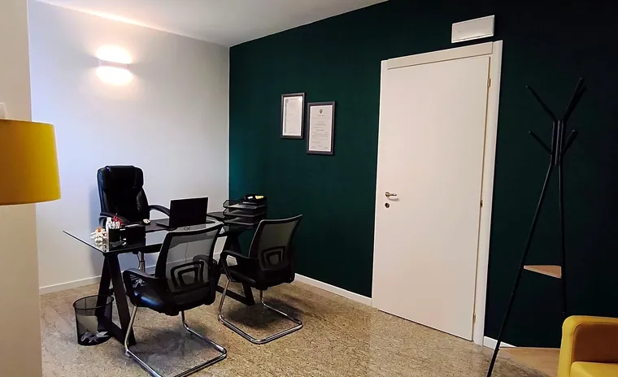
01Quando il chirurgo può aspettare: un percorso per provare prima la strada conservativa.
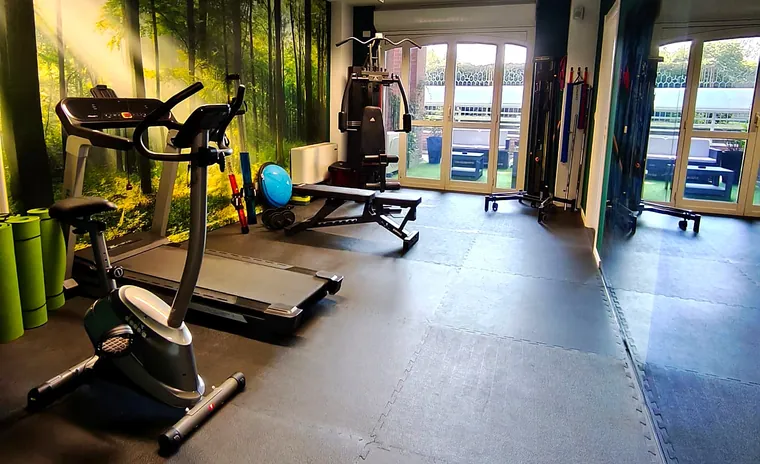
02Arrivare in sala operatoria preparati consente tempi di recupero più corti.
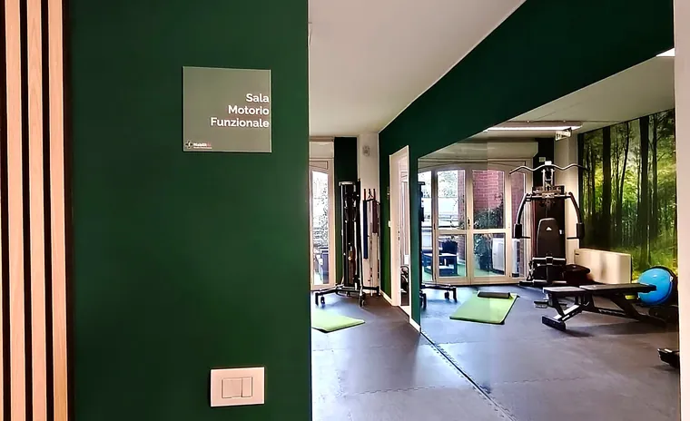
03Dal giorno dopo l'intervento al ritorno alle attività di tutti i giorni, fino alla riatleticizzazione.
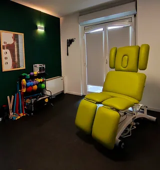
04 05
05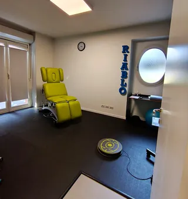
06 07
07Quando il chirurgo può aspettare: un percorso per provare prima la strada conservativa.
Arrivare in sala operatoria preparati consente tempi di recupero più corti.
Dal giorno dopo l'intervento al ritorno alle attività di tutti i giorni, fino alla riatleticizzazione.
Infortuni, ritorno in campo, prevenzione e test prima del via libera.
Fratture, protesi, distorsioni e dolori articolari: recupero di forza e movimento.
Equilibrio, passo e autonomia: dopo un ictus o con una malattia neurodegenerativa.
Un percorso riservato e graduale, per lei e per lui, con esercizi mirati.
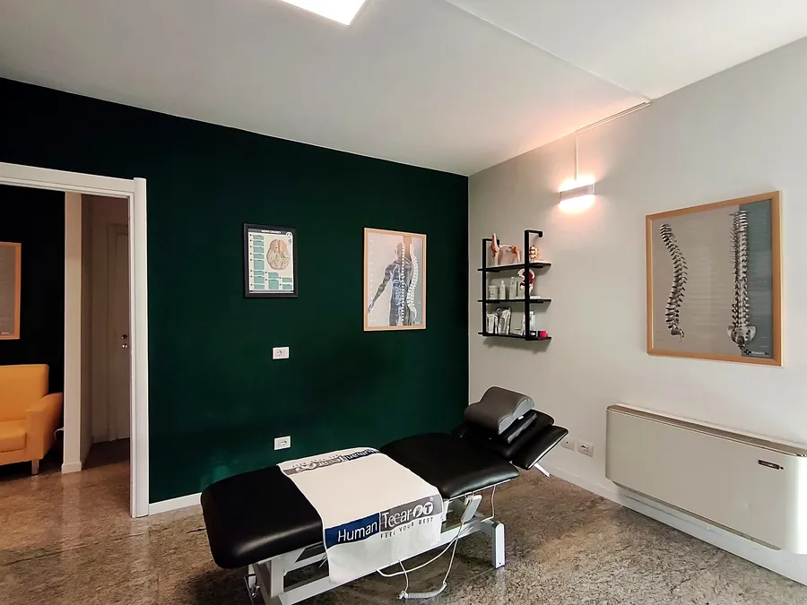
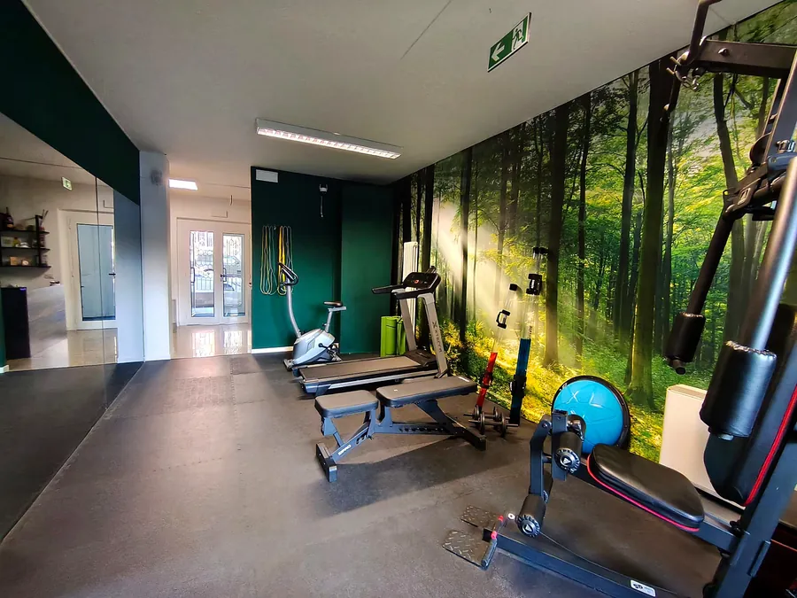
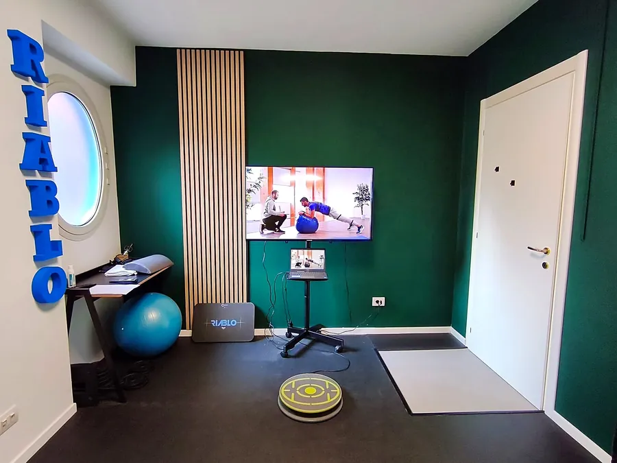
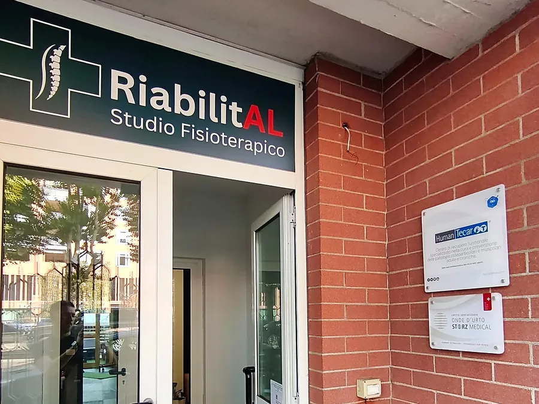
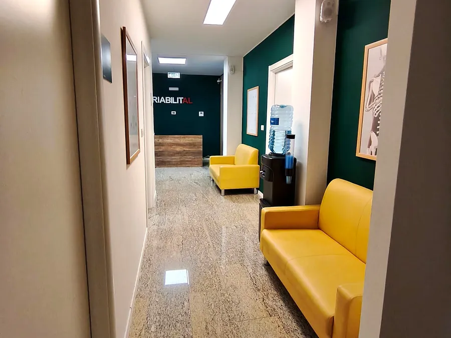
Oltre dieci anni di esperienza condivisa. Lo studio è nato per seguire ogni paziente con una valutazione accurata, un percorso personalizzato e il tempo per spiegare ogni passaggio.

Fisioterapista · Terapia manuale e postura

Fisioterapista · Riabilitazione post-chirurgica e sportiva
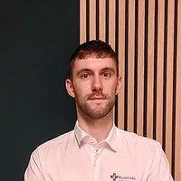
Osteopata · Recupero motorio e funzionale

«Ho fatto la Tecarterapia e in 5 sedute e' andato a posto. Cammino salgo e scendo le scale senza più dolore.»
Maria Grazia Taddei · tendine d'Achille
«Dopo 10 sedute ho pienamente recuperato la funzionalità del ginocchio. È stato un percorso di fatica ma ne è valsa la pena.»
Gianluca Pisci · crociato e menisco
«Sono stato trattato con l'ausilio del sistema Monos per le prime sedute e dopo con una ginnastica riabilitativa seguita da tecarterapia. […] I miglioramenti erano evidenti a ogni seduta.»
Sergio Balbi · frattura vertebrale
«Ho effettuato un ciclo di onde d'urto presso questo studio […]. Spiegano bene cosa stanno facendo e mettono subito a proprio agio.»
Carmelo Alessandro · onde d'urto
«A seguito di una rottura del piatto tibiale, ho recuperato pienamente la mia deambulazione.»
Silvia Vismara · piatto tibiale
«Ho fatto un ciclo di terapia per dolori lombari, mi sono trovata benissimo staff davvero preparato e professionale.»
Domenica Cannizzaro · dolori lombari
«Mi sono rivolta a questo studio per evitare il trattamento chirurgico su una lesione LCA. Ho risolto il problema.»
Giovanna Cirillo · legamento crociato
«Qui hanno saputo accogliermi, spiegarmi costantemente quanto andavamo a fare e incoraggiarmi settimana dopo settimana.»
Iris Scaramozzino · frattura del gomito
«Prestano attenzione al paziente spiegando in modo chiaro e semplice il trattamento da effettuare.»
Alessia Di Cianni · tecar al ginocchio
No. Vieni ugualmente. Se hai referti, lastre o risonanze, portali: ti risparmieremo molto tempo.
Dipende da cosa facciamo. Una macchina è più veloce di un'ora in palestra. Te lo diciamo alla valutazione, con il resto del piano.
Tecar, laser, MONOS, elettroterapia: no. Onde d'urto: un po', per qualche minuto, sul punto. Mai dolore forte o da doversi fermare.
Sì. Fattura e pagamento tracciabile.
Nessuno può dirtelo al telefono. Noi te lo diciamo dopo averti visitato.
RiabilitAL - Studio di Fisioterapia
Corso T. Borsalino, 19, 15121 Alessandria AL
Puoi prenotare su WhatsApp o chiamando negli orari di apertura.